This procedure describes how to reconfigure an integrated DxI instrument to a stand-alone instrument.
Pre-Requisites:
If the customer wants to retain the DxI database settings after reconfiguring, you must capture all the required database information from the DxC and DxI screens. The customer might request the following types of information:
Quality Control Ranges
Enabled Tests
LIS Settings
Rack Configurations
Dil-Assay Correction Factors
Pipettors Enabled by Test
Any Customer Configured Ranges
Warning: The DxI database is not retained when reconfiguring the system. Capture any required information before proceeding.
Configure the instrument.
Select
Configure > PC Admin > System Admin > Integrated System Setup, and then enter the password
Access2Support.
Select
DxI 800 or
DxI 600, and then select
OK.
Note: When complete, the console PC and the instrument reboot.
Remove the integrated hardware.
Open the UCTA pick-and-place cover.
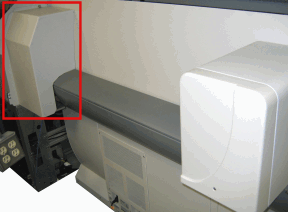
Remove the housing from the DxI instrument upper rear cover.
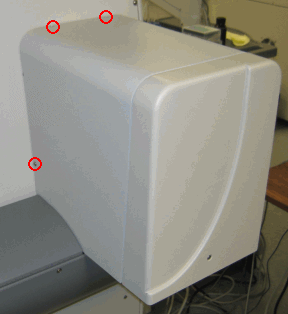
Remove the three brackets from the upper rear cover.
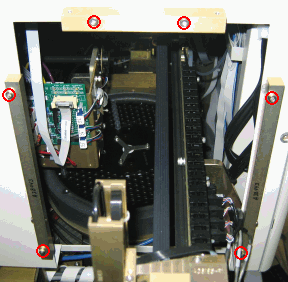
Remove the two screws securing the transfer shuttle top and lower covers. Remove both covers.
Disconnect the following connectors from the interconnect PCB for the UCTA transfer shuttle.
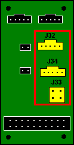
J33 (Motor)
J34 (Encoder)
J32 (Sensor)
Remove the UCTA transfer shuttle (two screws on each of the three cover supports).
Remove the upper rear cover from the instrument, and attach the upper rear access panel to the cover if a standard sample pipettor is being installed. If an LAS sample pipettor is being installed, then do not attach the upper rear access panel to the cover.
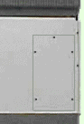
Remove the rear shuttle panel from the cover supports (three screws).
Remove the three integrated cover supports and replace them with the original cover supports (two screws each).
Figure 282: Original cover supports installed (rear view)
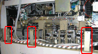
Remove the network cables.
Remove the network cable connecting the AU to the DxC hub.
If the serial number is less than 601433 for DxI 800 instruments or less than 900097 for DxI 600 instruments,
Disconnect the DxI AU network cable from the DxC hub.
Disconnect the other end of this cable from the CPU PCB.
Remove the cable from the instrument or coil it up and store it on the instrument baseplate behind the analytical module.
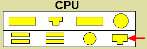
If the serial number is 601433 and above for DxI 800 instruments or 900097 and above for DxI 600 instruments,
Disconnect the cable from the port labeled UCTA on the back of the instrument by the power cord. Disconnect the other end of the cable from the DxC hub.
Disconnect the network cable from port 3 of the NIC card on the DxI PC. Disconnect the other end of this cable from the DxC hub.
Disconnect the printer from the switch box (if applicable), and reconnect the printer directly to the DxI PC.
Open the SPU.
Open the upper left cover of the instrument.
Loosen the locking screw.
The locking screw prevents the SPU from swinging outward from the instrument. It is not necessary to remove the screw because the SPU plate is slotted.
Remove the 3/16-in hex bolt located near the right end of the SPU cover.
Open the lower right access panel on the front of the instrument.
Pull the spring-loaded captive pin that holds the panel (located under the SPU) to the frame.
Grasping the SPU near the right end, swing the right end away from the instrument.
Warning: The SPU off-load area slides forward and rearward as the SPU is swung in and out. To prevent damage to the SPU or the off-load area, confirm that nothing obstructs the movement of the off-load area as the SPU is moved.
(For China and Canada Only.) On the front facing the edge of the Framus assembly, install the Chinese and French labels adjacent to the existing English label.
Note: The labels are in the DxI Installation Kit.
Separate the DxI instrument from the UCTA.
Remove the cover from the reagent storage module to access the front tie-plate.
Remove the connecting pins from the front and rear tie-plates connecting the UCTA to the DxI.
Note: Now the DxI instrument can be separated from the UCTA.
Remove the front and rear tie-plates (two bolts each) from the DxI instrument.
Insert the cleaving plug from the outside of the instrument into the hole in the side panel where the front tie-plate was located. Secure the plug to the baseplate with the slotted washer and screw.
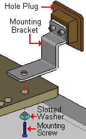
Replace the cover on the reagent storage module.
Close the SPU.
The SPU is hinged on the left side. The right side is released and can be swung out from the instrument to approximately 45 degrees.
Warning: The SPU off-load area slides forward and rearward as the SPU is swung in and out. To prevent damage to the SPU or the off-load area, confirm that nothing obstructs the movement of the off-load area as the SPU is moved.
Grasping the SPU near the right end, swing the right end toward the instrument.
Pull the spring-loaded captive pin to attach the panel (located under the SPU) to the frame.
Close the lower right access panel on the front of the instrument.
Insert the 3/16-in hex bolt.
Tighten the bolt that holds the SPU from swinging outward from the instrument (locking screw).
Close the upper left cover of the instrument.
Note: Initialize the instrument after opening and closing the SPU, because a switch is actuated when the SPU is opened.
Rotate the mounting brackets on the universal towers to the standard configuration.
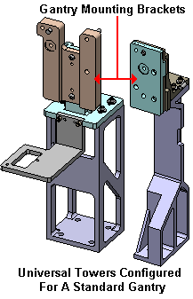
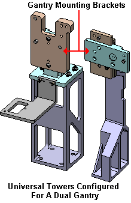
Remove the screws that secure the gantry mounting brackets to the front and rear universal towers (two screws on the front, one screw on the rear).
Rotate the brackets on the universal towers to the standard configuration, and secure the brackets to the towers.
Two screws are used to secure the gantry mounting bracket to the rear universal tower in the standard configuration.
Install the sample pipettor gantry.
Grasp the gantry with both hands, insert it into the instrument from the back, and attach it to the locating pins on the towers. Tighten the two captive screws on the gantry to secure it to the towers (one screw on each tower).
Caution: To avoid bending the spline shafts, do not use the spline shafts to lift the dual-gantry sample pipettor. Bent spline shafts restrict movement and cause motion errors.
Reconnect these connectors to the sample pipettor interface PCB.
Caution: Verify cables are not pinched between the towers and the gantry.
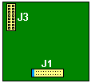
J1 - Ribbon Cable
J3 - Sample Pipettor Motor
Connect the pipettor supply tubing to the in-line fitting and route the tubing through the tubing clamps.
Perform a manufacturing cleanup.
Note: Manufacturing cleanup must be performed to eliminate potential database issues caused by incompatible Quality Control expiration dates from the integrated system.
Caution: Open the reagent load tray door to prevent the system from initializing after loading the software. Sample pipettor alignments are not correct, and if the sample pipettor attempts to enter the wash tower at the end of initialization, the probe could be damaged.
For Windows XP System and Software 5.2 or below:
Open the reagent load tray door so that the instrument does not initialize when the software is loaded.
Insert the UniCel DxI system software CD into the CD-ROM drive on the PC.
The installation software starts automatically.
Select
Next to display the software license agreement, and then select
Yes to continue.
At the prompt, enter the IP address
192.168.2.2.
If prompted, enter the instrument serial number.
Select
OK to update the instrument software.
Select
OK to clear the installation successful message.
Remove the CD from the drive when the
Setup Complete window displays, and then select the
Yes, I want to restart my computer option.
Select
Finish.
After the PC restarts, remove the software CD from the CD-ROM drive, and insert the APF CD into the drive when prompted.
If theUnknown Processes Running window displays after the PC restarts, select
OK to continue.
For Windows 8 System and Software 5.3.1 or above:
Note: DxI Software 5.3.1 is also compatible with Windows XP console PC.
Insert the software CD into the CD-ROM drive and press install button to load software. Press the finish button when complete to restart the console and AU.
Note: The software install program should start automatically. It may take up to 3 minutes for the program to launch. If the program doesn't auto launch, it can be manually started by selecting the Computer icon on the desktop and then double clicking on the D: DVD drive.
If the Unknown Processes Running message occurs after the PC restarts, select
OK to continue.
Note: When rebooting the Privacy & Security compliant Windows 8 or Windows 10 PC, you must enter security password "Access2Admin" when prompted to launch Windows.
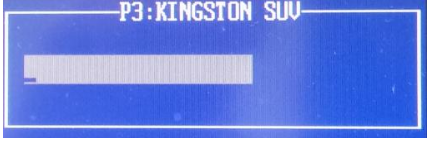
Insert the combined APF CD into the DxI drive when prompted.
Load the supplies.
Remove and discard all punctured reagent packs.
Warning: Failure to remove and discard punctured packs causes incorrect pack counts and could affect results. Do not initialize after removing packs, because alignments are not correct and the probe could be damaged.
Load two new bottles of substrate.
Install a waste bag into the solid waste container.
If an LAS sample pipettor has been installed, then complete MOD 6303 LAS option upgrade and all installation and verification tasks, to complete this installation.
For Windows XP System with Software 5.2 and below:
Select
Programs > Administrative Tools
> Remote Desktop Connection to AU PC.
Locate the
AuObj.exe icon (small y-shaped icon) on the bottom right of the Windows desktop.
Right-click
AuObj.exe, and select
Exit.
On the desktop, open My Computer. Select
Local C: Drive or AU_PC(C:) >> AU.
Locate the specific.ini file, right-click on the file, and then select
Copy.
Right-click on
Local C: Drive or AU_PC(C:), and then select Paste. A copy of the specific.ini file is placed on C: drive.
Double-click to open the specific.ini file in the
C: >> AU folder.
Select
Edit > Find, type
mfgalign, and select
Find Next.
Note:
The search finds the text MFGAlignmentsDone=Yes entry in the specific.ini file.
Change Yes to No, and then save the changes by selecting
File > Save.
Select the X in the upper right corner to close the specific.ini file.
Open the reagent load tray door.
Note: The reagent load tray door is opened to prevent the system from initializing and damaging the probe.
Double-click the
AUObj.exe icon on the desktop to restart the AU program.
Note: The user interface displays
Manufacturing Not Aligned under the
Main Menu or in the
Diagnostics
screen.
Close the reagent load tray door.
Close the remote desktop connection to the instrument.
From the
AU Desktop, select
Start > Disconnect or select the
X in the upper right corner.
Select
OK at the
Your remote session will be disconnected pop-up.
For Windows 8 System with Software 5.3.1 and above:
Note: DxI Software 5.3.1 is compatible with Windows XP console PC. If the software was installed on the Windows XP console PC, then follow the Windows XP section to configure the AU software settings.
Open a remote desktop connection to the AU.
Press the
Windows key, select
Remote Desktop Connection icon or type
remote and open the Remote Desktop Connection program.
Type
192.168.2.4 into the Computer field and select
Connect.
Enter
user for the User Name and
tech for the password if prompted.
If prompted at the RDS warning screen, check the box for "Don't ask me again for connections to this computer" and select
Yes.
Note: For Windows 8, the default console IP address is 192.168.2.3 and the AU IP address is 192.168.2.4. Neither IP address changes during the software load process.
Shut down the AU Object program.
Right click on the task bar and select Task Manager.
In the Task Manager box, click on
Processes, select
AUobj Module, and click on
End Task in the bottom corner of the box.
In the AU desktop, find the specific.ini file and make a copy of the file.
Double click on
Computer or
File Explore and select
Local C: drive or AU_PC (C:) > AU > specific.ini, right-click on the specific.ini file, and then select
Copy.
Right-click
Local C: Drive or AU_PC(C:), and then select
Paste. A copy of the specific.ini file is placed on
AU_PC(C:).
Double click on the specific.ini file to open the file in Notepad program.
Select
Edit > Find, type
mfgalign, and select
Find Next.
Note:
The search finds the text MFGAlignmentsDone=Yes entry in the specific.ini file.
Change Yes to No, and then save the changes by selecting
File > Save.
Close the specific.ini file and the
Explorer window.
Open the reagent load tray door.
Note: The reagent load tray door is opened to prevent the system from initializing and damaging the probe.
Double-click the
AUObj.exe icon on the desktop to restart the AU program.
Note: The user interface displays
Manufacturing Not Aligned under the
Main Menu or in the
Diagnostics
screen.
Close the reagent load tray door.
Close the remote desktop connection to the instrument.
From the
AU Desktop, right click on
Remote Desktop Connection icon on the upper left corner or on the task bar > Close or select the
X in the upper right corner.
Select
OK at the
Your remote session will be disconnected pop-up.